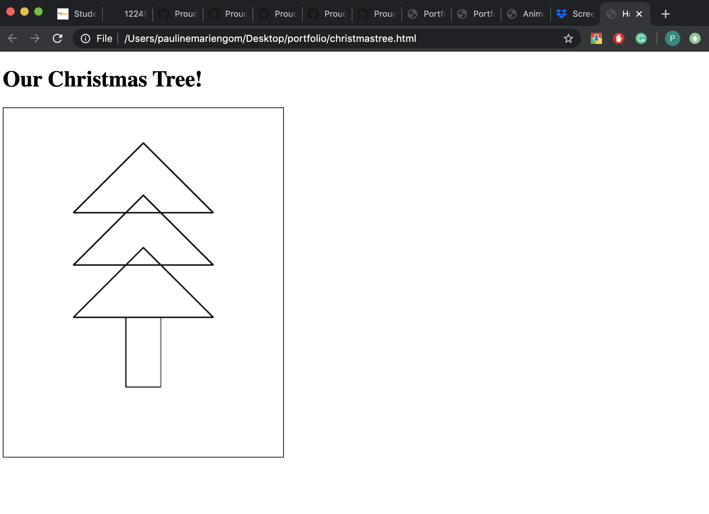

Pauline's Portfolio
projects
part 3 - trees, drawings and math


click image to go to webpage

this particular project was difficult to navigate, in particular because in order to create
the drawing of the christmas tree, we had to use javascript, once again. we used the canvas option,
which allowed us to create lines which would then form the christmas tree. this project was slightly
more difficult, because in order to create those lines, we also had to determine its co-ordinates. it was
slightly fun figuring it out, since this was a group project, and there was also a lot of trial and error.
this project taught me that there is in fact, a lot of math involved in coding.